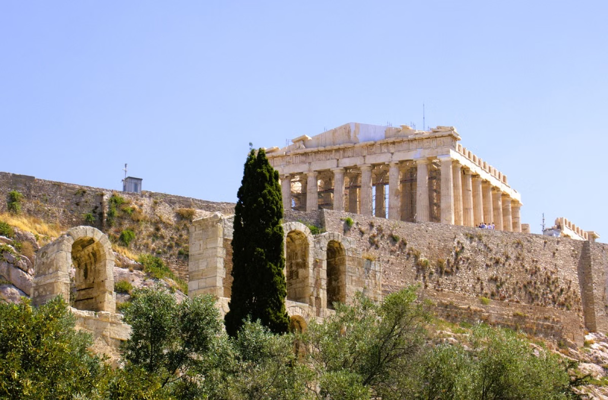
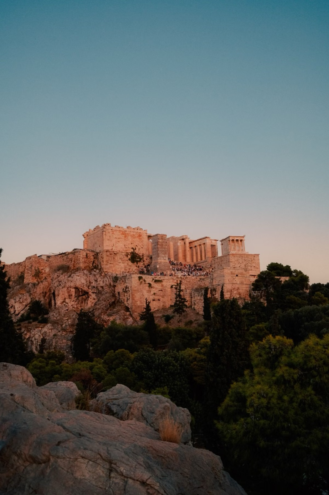
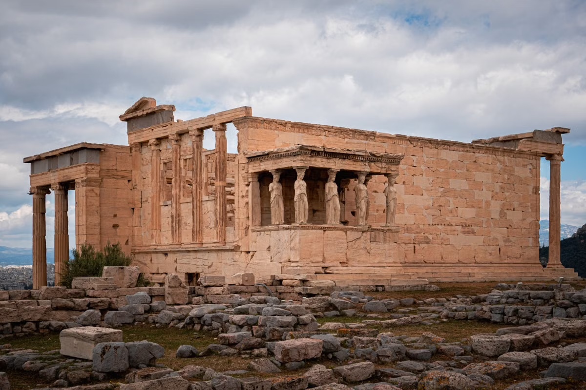

5 объектов под маршрутПорог инвестицийСценарий арендыПамятка Golden Visa
О вебинаре
Как связать объект, инвестиционную задачу и актуальный маршрут Golden Visa
Разберём Афины и другие локации, объясним разные пороги программы и покажем, почему объект для аренды не всегда автоматически подходит под инвестиционный вид на жительство.
После регистрации пришлём подборку объектов с ценой, статусом, сценарием аренды и пометкой о том, по какому основанию проект может рассматриваться.
Жизнь в Греции
Город, море и история становятся частью повседневности
Локация здесь — это не только строка в расчёте: она определяет утренний маршрут, вечерний вид, характер аренды и то, насколько дом подходит вам лично.

Афины вокруг АкрополяЖивой город, где история соседствует с повседневным маршрутом.

Город после закатаКафе, прогулки и узнаваемый силуэт Афин рядом с домом.

Культура как часть средыЛокация, к которой возвращаются не только туристы, но и жители города.
Программа
Что разберём на вебинаре
01
Афины и другие рынки
Где важнее городской спрос, где — курортный сценарий, а где — условия конкретной программы.
02
Пороги Golden Visa
Почему €250 000, €400 000 и €800 000 — разные основания, а не три цены одного и того же продукта.
03
Доход от недвижимости
Как считать аренду, расходы, управление и ликвидность без обещания фиксированного результата.
04
Проверка объекта
Юридический статус, назначение, площадь, локация и документы до оплаты резерва.
05
Персональная подборка
Как отделить проекты, подходящие под ваш маршрут, от обычной инвестиционной недвижимости.
После регистрации
Что войдёт в вашу подборку
01
5 объектов
Варианты под бюджет, инвестиционную цель и применимый маршрут.
02
Порог и основание
Почему проект рассматривается по €250k, €400k или €800k.
03
Инвестиционная модель
Цена, расходы, сценарий аренды и ключевые риски.
04
Чек-лист проверки
Что подтвердить у юриста и продавца до бронирования.
Golden Visa Греции
Порог зависит от региона и юридического основания объекта
€800 000 / €400 000основные пороги покупки недвижимости в зависимости от региона
От €250 000для отдельных случаев конверсии коммерческих помещений в жильё и исторических зданий
Нельзя оценивать проект только по цене. Для основных маршрутов действуют требования к локации и объекту; специальные основания требуют отдельной юридической проверки. Разрешение выдаётся государственными органами после рассмотрения документов.